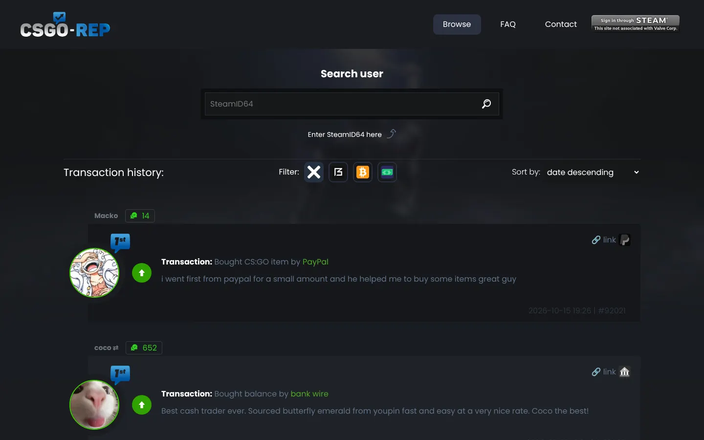
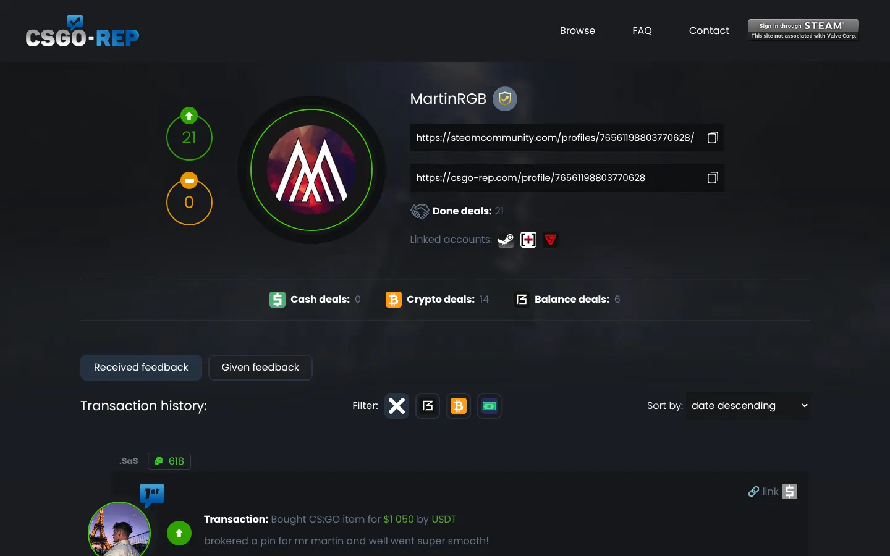
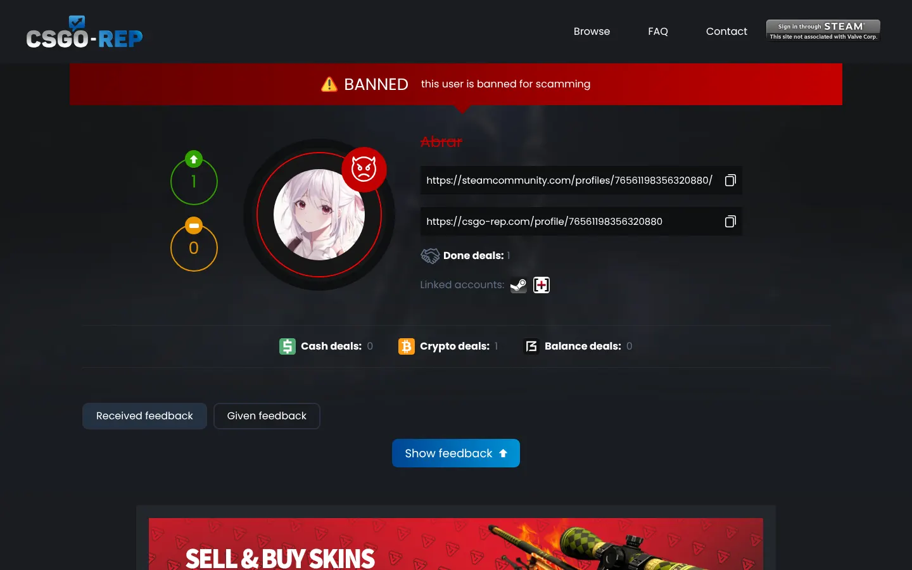

CSGO-Rep
La reputación de los traders de CS. Antes de mandar plata o skins, buscá a la otra persona y mirá su historial real de trades.Reputation for CS traders. Before you send money or skins, look the other person up and see their real trade history.



92.000+reseñas positivaspositive reviews
63.400+traders registradosregistered traders
900+estafadores baneadosscammers banned
2020desdesince
Cómo funcionaHow it works
Muchos trades de CS se pagan por fuera de Steam y alguien tiene que ir primero. CSGO-Rep te ayuda a saber si podés confiar.Lots of CS trades are paid outside Steam, and someone has to go first. CSGO-Rep helps you know who to trust.
- Entrá con SteamLog in with SteamTu perfil queda atado a tu cuenta, así nadie se hace pasar por vos.Your profile is tied to your account, so nobody can pose as you.
- Buscá a la otra personaLook the other person upPegá su SteamID64 y mirá su puntaje y sus trades anteriores.Paste their SteamID64 and see their score and past trades.
- Revisá cada reseñaRead every reviewQué se compró o vendió, por cuánto, cómo se pagó y quién fue primero. El que va primero es el que asume el riesgo.What was bought or sold, for how much, how it was paid and who went first. Whoever goes first is the one taking the risk.
- Dejá tu +repLeave your +repAl terminar, dejás tu reseña y sumás a un historial que vale más que cualquier captura.When you’re done, leave a review and add to a history worth more than any screenshot.